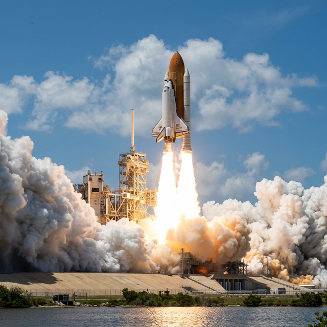
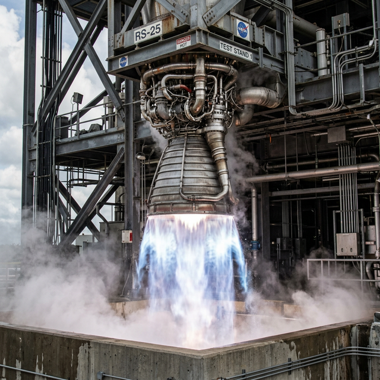
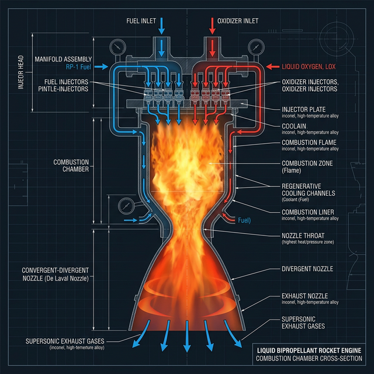

Powering Spaceflight Through Chemistry
Explore the Chemistry ↓Fuel and oxidizer are pre-mixed into a solid grain. Once ignited, it burns until fully consumed. Used in boosters like the Space Shuttle SRBs.
Fuel and oxidizer stored separately as liquids, then mixed in a combustion chamber. Allows throttle control. Used in engines like the RS-25.
Combines a solid fuel grain with a liquid or gaseous oxidizer. Simpler than liquid systems but more controllable than solid.
Related to rocket propellant chemistry — defined in my own words
The chemicals used in a liquid hydrogen/oxygen rocket engine (like the Space Shuttle Main Engine RS-25):
Each colored circle represents an atom. The diagram shows how atoms rearrange during the reaction while being conserved.
Conservation of atoms: 4 Hydrogen atoms and 2 Oxygen atoms on both sides — the equation is balanced.
General Pattern: Fuel + O₂ → Oxide products + Energy
This is a combustion reaction because hydrogen (the fuel) reacts with oxygen to produce water and releases a large amount of heat and light energy. Combustion reactions are always exothermic — they release energy.
In a rocket engine, this energy is what produces the extremely hot gases that expand and create thrust. The hydrogen-oxygen combustion is one of the most energetic chemical reactions used in rocketry, with flame temperatures reaching over 3,000°C.



This animation shows the basic process of rocket combustion — fuel ignites in the combustion chamber, producing hot exhaust gases that exit through the nozzle.
VIDEO OF PROCESS
Click the video above to play.
In my own words
Rocket propulsion works by using a chemical reaction to create thrust. In a liquid rocket engine like the RS-25 (used on the Space Shuttle and NASA's SLS rocket), two chemicals are used: liquid hydrogen (the fuel) and liquid oxygen (the oxidizer).
These chemicals are stored in separate tanks at extremely cold temperatures — hydrogen at −253°C and oxygen at −183°C — to keep them in liquid form. Powerful turbopumps force the two liquids into the combustion chamber at very high pressure.
Inside the combustion chamber, the hydrogen and oxygen mix and are ignited. The chemical reaction 2H₂ + O₂ → 2H₂O takes place incredibly fast. This is a combustion reaction that is highly exothermic, meaning it releases an enormous amount of heat — the flame temperature can exceed 3,000°C.
The heat turns the water product into superheated steam that expands rapidly. This expanding gas is forced out through a specially shaped nozzle at the bottom of the engine. According to Newton's Third Law (for every action there is an equal and opposite reaction), pushing the hot gas downward creates an upward force — this is thrust.
The beauty of hydrogen-oxygen rockets is that the only exhaust product is water vapor, making it one of the cleanest rocket fuels available. The RS-25 engine produces about 2.28 million Newtons of thrust in vacuum and has one of the highest specific impulses (~452 s) of any chemical rocket engine.
MLA Format